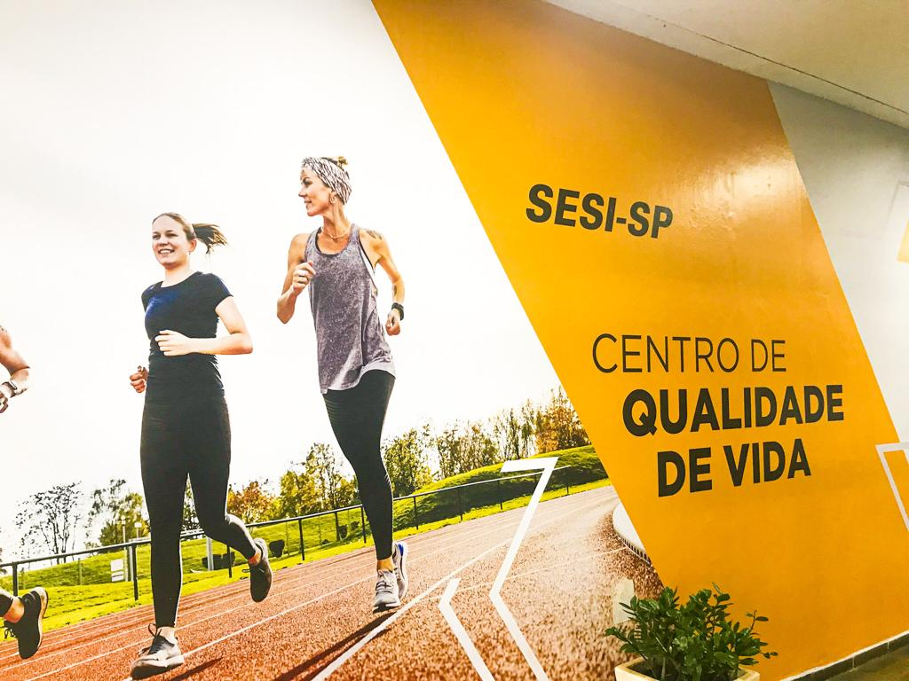
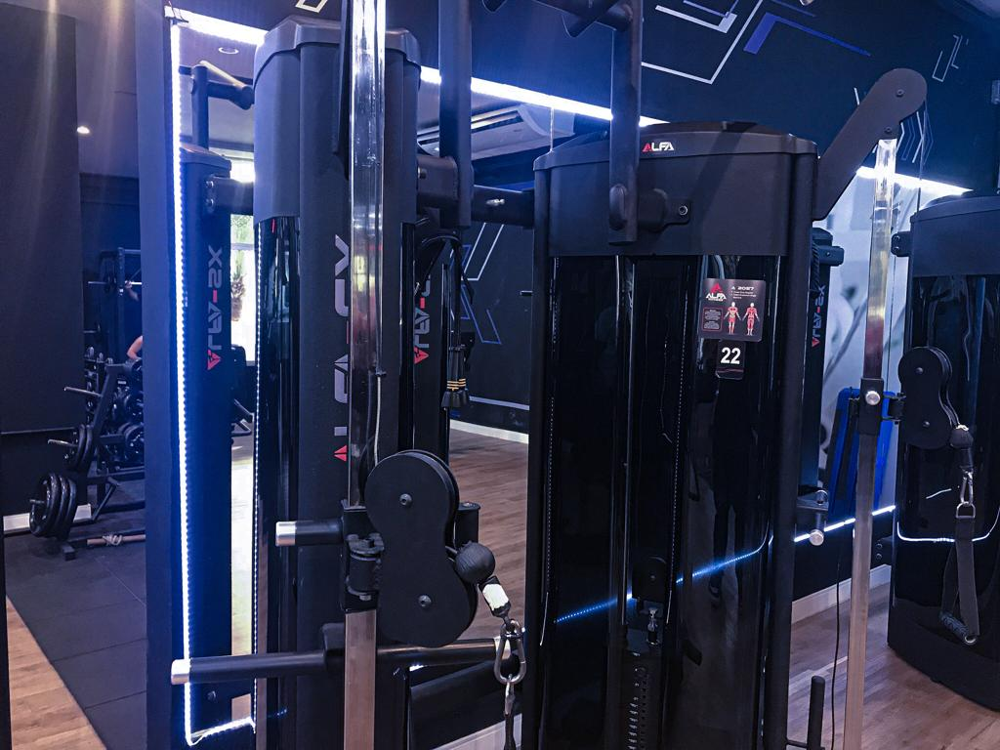
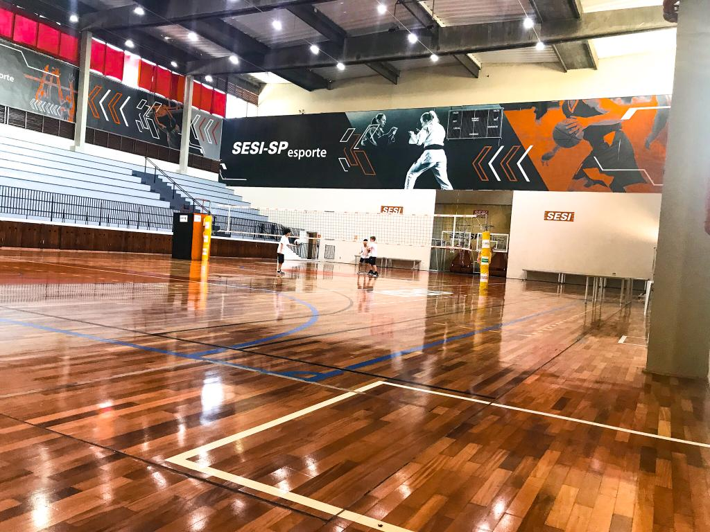
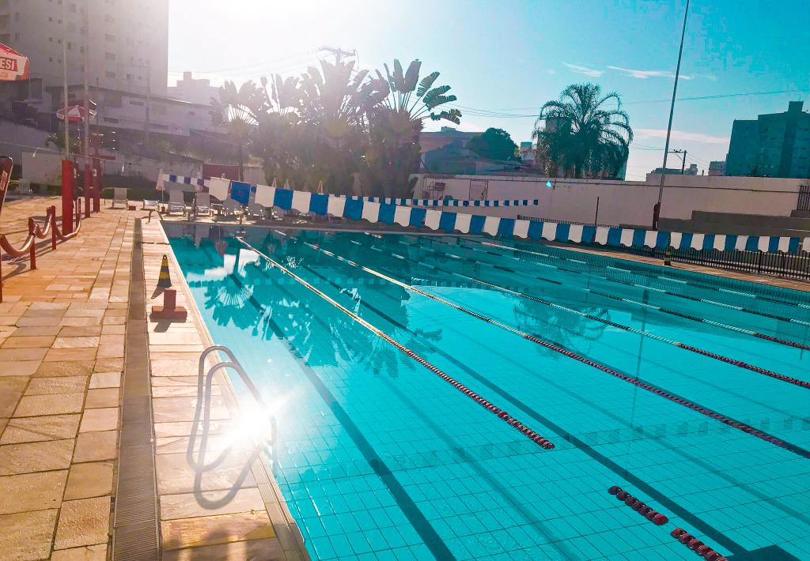

ㅤ
|  | ㅤ | ㅤO Sesi tem várias iniciativas para incluir dinâmicas diferenciadas em seus ambientes escolares, dentre delas está os clubes que proporcionam uma maior flexibilidade à saúde mental, e física para alunos, professores e funcionários. |
ㅤ
Os ambientes incluem academias com musculação e espaços aeróbicos, piscinas com aulas de mergulho, times de vólei, artes marciais e entre várias outras modalidades:
  